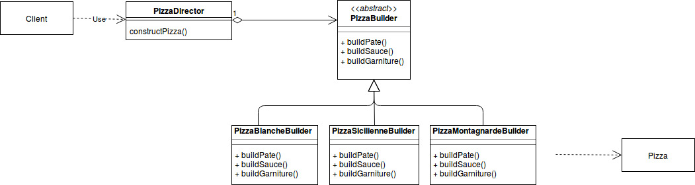
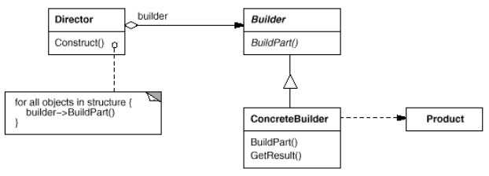
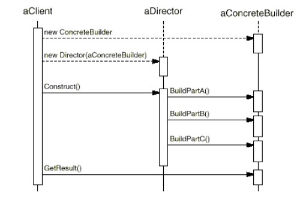

But : Séparer la construction d'un objet complexe de sa représentation de manière à pouvoir utiliser le même processus de création pour différentes représentations (gof).
Concerne la création d'objets complexes pas à pas.
Lorsqu'on a un ensemble objets à construire, et que tous ces objets partagent les mêmes étapes de création.
Exemple : pizza
On fabrique différents types de pizza.Le produit fini est une pizza :
class Pizza {
private String name = "";
private String pate = "";
private String sauce = "";
private String garniture = "";
// ...
}
On modélise la fabrication d'une pizza en 3 étapes :
- Faire la pâte
- Faire la sauce
- Faire la garniture
Le pattern Builder utilise cette structure :  La classe
PizzaBuilder :
abstract class PizzaBuilder {
protected Pizza pizza;
public Pizza getPizza() { return pizza; }
public void createNewPizzaProduct(){}
public void buildPate(){}
public void buildSauce(){}
public void buildGarniture(){}
}
Associée à une classe PizzaDirector qui fournit une méthode constructPizza() :
class PizzaDirector{
private PizzaBuilder pizzaBuilder;
public void setPizzaBuilder(PizzaBuilder pb) {
pizzaBuilder = pb;
}
public Pizza getPizza() {
return pizzaBuilder.getPizza(); // ne fait que transmettre au builder concret
}
public void constructPizza() {
pizzaBuilder.buildPate();
pizzaBuilder.buildSauce();
pizzaBuilder.buildGarniture();
}
}
PizzaDirector n'utilise que l'interface abstraite de PizzaBuilder, ne connaît rien des builders concrets.
Le client crée un
PizzaDirector et ordonne la fabrication d'objets :
PizzaDirector pizzaDirector = new PizzaDirector();
PizzaBuilder siciliennePizzaBuilder = new SiciliennePizzaBuilder();
PizzaBuilder blanchePizzaBuilder = new BlanchePizzaBuilder();
pizzaDirector.setPizzaBuilder( siciliennePizzaBuilder );
pizzaDirector.constructPizza();
Pizza pizza1 = pizzaDirector.getPizza();
pizzaDirector.setPizzaBuilder( blanchePizzaBuilder );
pizzaDirector.constructPizza();
Pizza pizza2 = pizzaDirector.getPizza();
Code dans PizzaBuilderDemo.java
Si on veut maintenant produire une pizza aux fruits de mer, on a juste à construire un
FruitsDeMerPizzaBuilder, qui devient utilisable par le code client sans avoir du tout touché aux classes PizzaDirector et PizzaBuilder.
Présentation GOF
 Applications
Utilisez ce pattern quand :- L'algorithme de création d'un objet complexe doit être indépendant des parties qui fabriquent l'objet et de comment elles sont assemblées.
- Le processus de construction doit permettre différentes représentations de l'objet qui est construit.
Conséquences
-
Permet de varier la représentation interne du produit :
Builder fournit auDirectorune interface abstraite pour construire le produit.
L'interface permet au Builder de cacher la représentation et la structure interne du produit.
Comme le produit est construit à travers une interface abstraite, pour changer la représentation interne du produit, il suffit de créer un nouveau builder. -
Isole le code de construction et la représentation :
Builderaméliore la modularité en encapsulant la manière dont le produit est fabriqué et représenté.
Le client n'a pas besoin de connaître les classes qui définissent la représentation interne du produit. -
Permet un contrôle plus fin sur le processus de construction :
Contrairement aux autres patterns de création, qui contruisent les objets d'un seul coup,
Builder construit l'objet pas à pas sous le contrôle du Director.
Exemple du labyrinthe
On crée 2 variantes du jeu : le jeu standard et un faux jeu, qui ne construit pas les objets mais les compte.Exercice
Voir l'implémentation java de l'exemple gof et identifier les différents acteurs du pattern builder.
Voir l'implémentation java de l'exemple gof et identifier les différents acteurs du pattern builder.